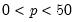
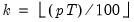
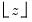

|
|
|
observations and , define the number of trimmed end observations as , where  is the integer floor function.
 represent data for the
represent data for the  observations ordered from low to high,
observations ordered from low to high,